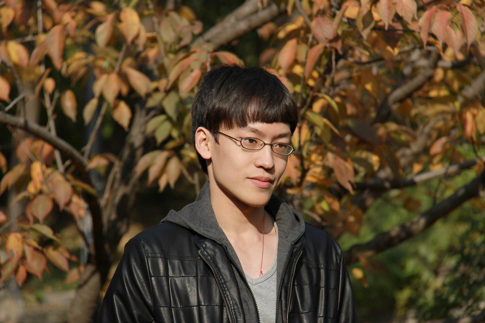

Yuxiang Yang
Assistant Professor
Rm 315C, Chow Yei Ching Building
Department of Computer Science
The University of Hong Kong
Hong Kong
Email: yuxiang [at] cs [dot] hku [dot] hk


Yuxiang YangAssistant Professor
Rm 315C, Chow Yei Ching Building |
 |
I am a quantum information theorist, currently an assistant professor at the University of Hong Kong.
From 2018 to 2021, I worked at ITP, ETH Zürich (Renato Renner's group) as a postdoc.
I obtained a PhD in Computer Science from the University of Hong Kong (2018; supervisor: Giulio Chiribella) and a Bachelor in Physics from Tsinghua University (2013).
My research interests include:
I am looking for motivated PhD students.
Please contact me with your CV, publications (if any), transcript, and a brief statement of interest.
Postdoc positions are now available in my group at the University of Hong Kong.
The candidate should have research experience in quantum metrology, quantum information, or quantum computing.
Please email me your CV, a brief research statement, representative (preferably first-author) publications, and at least one academic reference.
| 2024-26 | Title: Quantum-enhanced Metrology. NSFC EYS (12322516) Amount: 2,000,000 CNY |
| 2024-26 | Title: Optimised Quantum Metrology with Noisy and Intermediate-Scale Quantum (NISQ) Techniques. GRF - RGC (HK) (17303923) Amount: 792,532 HKD |
| 2023-25 | Title: Multiparameter Non-Markovian Quantum Metrology: from Theory to Quantum Sensor Design. ECS - RGC (HK) (27310822) Amount: 738,110 HKD |
| 2022-24 | Title: Quantum resource lifting: quantum computing and metrology under the resource theory framework. Guangdong NSF (2022A1515010340) Amount: 100,000 CNY |
| Zishen Li | PhD Student, 2023- (BSc SUSTech) |
| Manwen Liao | PhD Student, 2022- (BSc HUST) |
| Qiushi Liu | PhD Student, 2021- (MSc ETHZ, BSc PKU) |
| Anian Altherr | Master thesis at ETHZ, 2021 (--> PhD at ETHZ) |
| Qiushi Liu | Master thesis at ETHZ, 2021 (--> PhD at HKU) |
| Fereshte Mozafari | Visiting PhD Student at ETHZ, 2021 (--> PhD at EPFL) |
| Christian Bertoni | Master thesis at ETHZ, 2019; co-supervision with Joe Renes (--> PhD at FUB) |
| 2023 | NSFC Excellent Young Scientist Scheme (Hong Kong and Macau, 港澳优青) |
| 2021 | Journal of Physics A, Emerging Talents |
| 2017 | Microsoft Research Asia Fellowship |
| COMP 2121 | Discrete Mathematics |
| COMP 3366 | Quantum Algorithms and Computer Architecture |
| CCST 9077 | The Quantum Revolution: From Secret Codes to Black Holes |
Acknowledgement to Yu, Lequan for providing the template of this website.